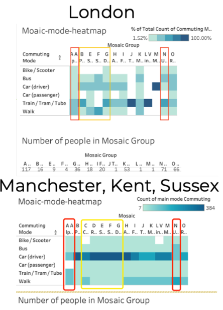
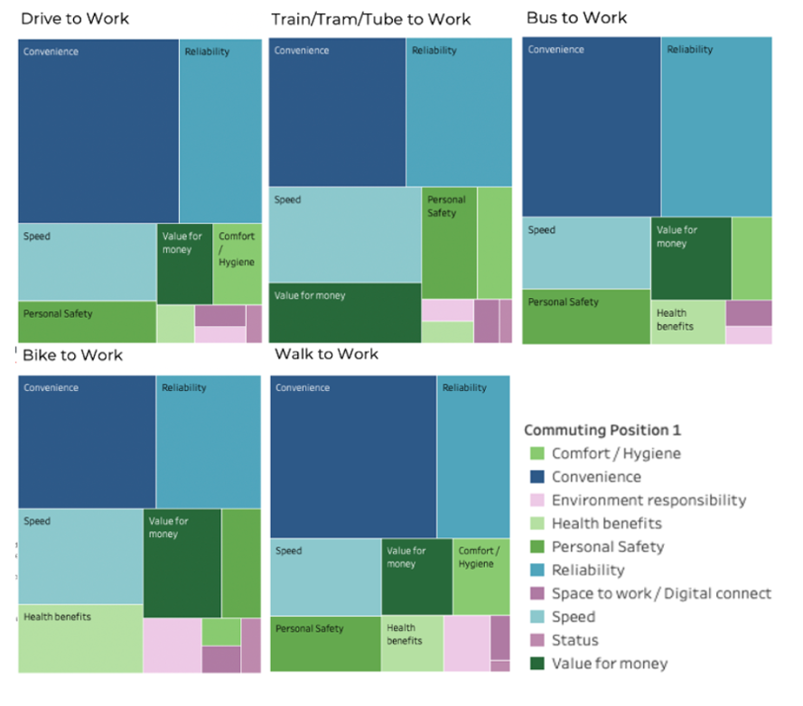

In a rapidly developing modern society that seeks instant convenience, cars have become regulars and iconic representatives on urban streets for a long time. This has undoubtedly brought convenience and comfort to people's daily lives. However, it has also put tremendous pressure on our daily lives at the same time. With greenhouse gas (GHG) emissions rising significantly over the past few decades, global warming and other related environmental issues have gradually come into the public's view. What's even more concerning is that transportation, especially road transportation, has become a major source of these emissions. According to data from the UK's Department of Transport, transportation is the largest sector for greenhouse gas emissions, accounting for 24% (406 million tons of CO2 equivalent) of the UK’s total emissions in 2020. Based on carbon emission estimates in 2022, the CO2 equivalent (CO2e) emitted by a petrol car per passenger from London to Glasgow is about 4 times that of a long-distance coach covering the same distance. This makes exploring and adopting greener and more sustainable modes of travel particularly important.
In this context, Jing Li bravely explored into this critical area, in recognising the significant contribution of transportation to greenhouse gas emissions, especially as the COVID-19 swept across the globe. In the post-COVID era, according to a report by McKinsey & Company, after the pandemic, most employees wish to work from home three days a week. However, for those who still need to commute, has their mode of commuting also changed? Therefore, Jing decided to deep into the new commuting patterns formed post-pandemic due to shifts in work modalities and the like, as her placement project at WSP, a global leader in sustainable solutions.
The project is exploring the changing personal commuting behaviour post-COVID. For example, some individuals reduced their use of public transport to minimise exposure to the virus, leading to an increase in carpooling. Additionally, others turned to more active modes of transport, such as walking and cycling (Department for Transport, 2023). Therefore, Jing’s work was to dive into the travel patterns of the UK public, with clear and purposeful objectives: to understand variations in travel patterns and predict potential transitions towards more sustainable means.
Londoners’ travel habits differ from other UK cities, with more preferences towards public transport. For example, Londoners much prefer public transport, whereas those in Kent are markedly preferring to drive. To validate such observation, Jing began utilising data assets from WSP and other open official sources to explore the UK’s travel changes post-COVID. She found that geographical differences play a crucial role in these choices. For many who live in peripheral cities but work in central London, trains are the preferred choice. Moreover, the convenience of public transport contributes to more sustainable commutes. If the accessibility of public transport was the best everywhere, the resultant CO2 reduction would equate to the absorption capacity of 76 trees per person per year.
Socio-economic factors also influence travel choices. When analysing data related to Mosaic groups, Jing observed a notable trend. For instance, Group A - City Prosperity - and Group K - Municipal Challenge - tend to use public transport, whereas Group B - Prestige Positions - prefer a private car. She noted that socio-economic status seems to be closely tied to modes of travel. Higher income brackets show a preference for cars, trains and trams, but this preference wanes when income levels are exceptionally high. Those in lower income brackets tend to walk or take the bus more frequently; the evident relationship between travel choices and socio-economic disparities holds profound implications for environmental sustainability.

Figure 1: Commuting modes by Mosaic groups (Jing,2022)
To have a better understanding, Jing utilised the Google Directions API to compare commute times across different modes of transport. She concluded that many people prefer to drive rather than use public transport mainly due to the inconvenience and extended commute times associated with the latter. This further proves the importance of public transport accessibility in promoting sustainable commutes. However, it was also found that individuals' core values play an important role in their travel choices. For example, those who choose to cycle or walk typically place a higher emphasis on the environment and health.

Figure 2: Determining factors by different commuting modes (Jing,2022)
To encourage more people to adopt eco-friendly modes of transport, the project aims to conceptualise implementation strategies, not only promoting the benefits of environmental protection and health, but also offering specific incentive measures. For example, financial subsidies or additional bonuses for those who choose to walk or cycle to work might be more persuasive.
Summing up the project findings, Jing felt deeply inspired by realising that, while external factors like the accessibility of public transport and socio-economic status are crucial, individuals’ intrinsic beliefs and values also influence their commuting choices. In the post-COVID era, the world is undergoing significant changes, and the team stands at the forefront of this transformation, leveraging data to drive a more sustainable future.
(Editor: Jessie Sijie Tan, Yijing Li)